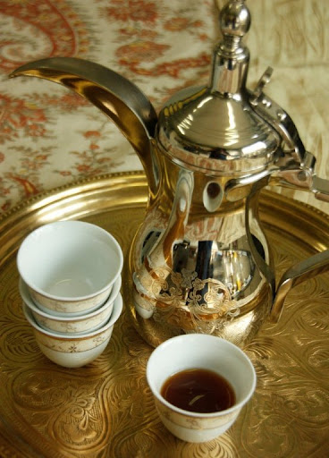

🇰🇼 Kuwaiti Culture
Kuwait has a rich cultural heritage that blends Bedouin traditions with modern Gulf lifestyle. Visitors notice Kuwait’s warm hospitality, love for gatherings, and appreciation for family and community.
- Hospitality: Guests are welcomed with Arabic coffee and dates.
- Traditional Clothing: Men wear dishdasha; women wear abaya.
- Arts & Music: Traditional Sout music and pearl diving songs.
- Traditional Markets: Souq Al-Mubarakiya shows the heart of Kuwaiti culture.
🍽️ Famous Kuwaiti Dishes
Machboos (مجبوس)
The national dish of Kuwait — spiced rice served with chicken, lamb, or fish.
Muttabaq Zubaidi (مطبق زبيدي)
Fried Zubaidi fish served with rice — a proud symbol of Kuwait’s seafood culture.
Jareesh (جريش)
Crushed wheat cooked with chicken, yogurt, and spices.
Harees (هريس)
A creamy wheat and meat dish served during Ramadan.
Balaleet (بلاليط)
Sweet vermicelli noodles with eggs — a top Kuwaiti breakfast.
Luqaimat (لقيمات)
Sweet, crunchy dough balls with honey or date syrup.

☕ Drinks
- Arabic Coffee (Gahwa)
- Karak Tea

🎉 Cultural Festivals
- Hala February Festival: Concerts, shows, and celebrations.
- National & Liberation Day: Parades and fireworks on Feb 25–26.